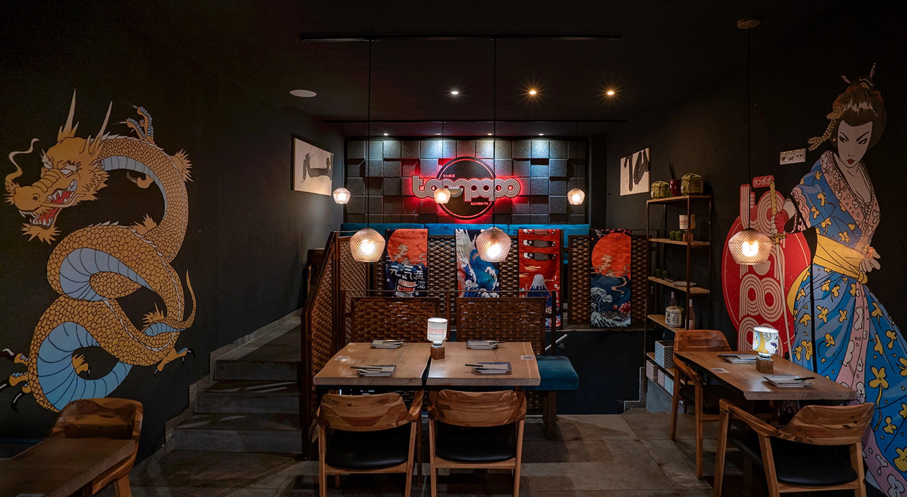
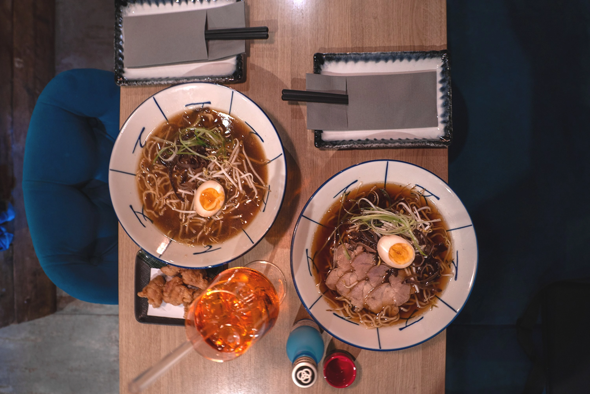
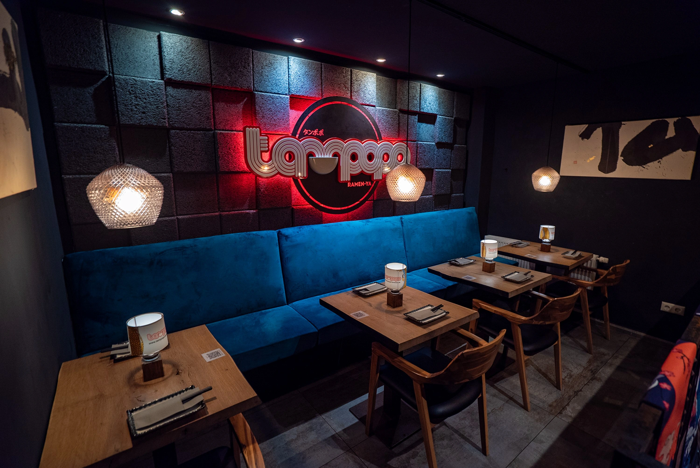
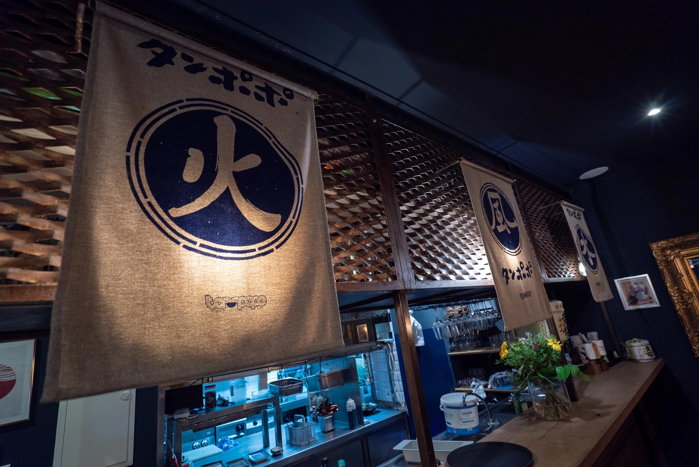
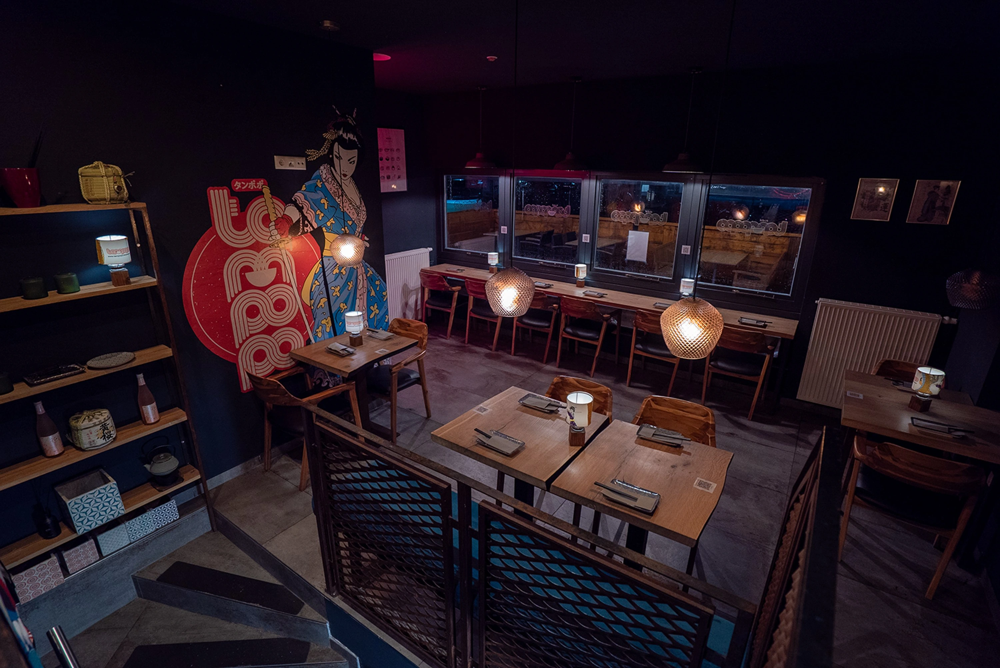
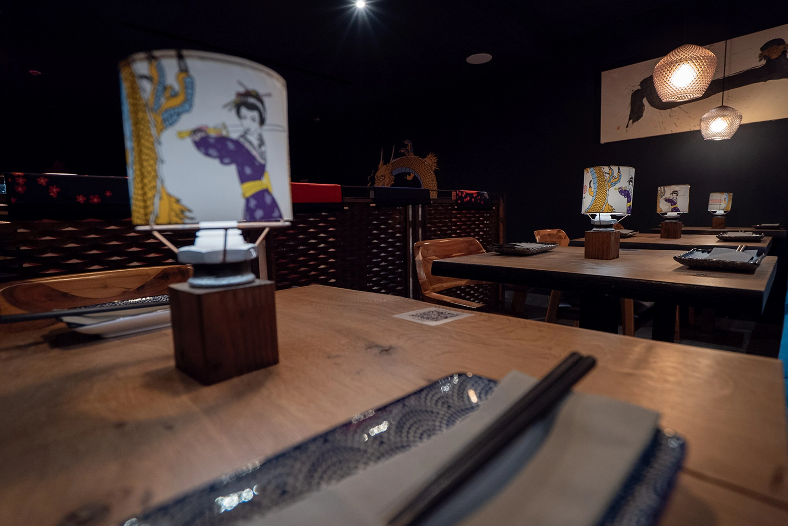

タンポポ・ラーメン
A relaxed Japanese izakaya where tradition meets Nikkei fusion — hand-pulled ramen, fresh sushi and dramatic wall art, served under warm neon.
About Tampopo
Tampopo is a relaxed Japanese restaurant in Bremen with a harmonious blend of traditional and modern aesthetics. We specialise in authentic dishes like sushi and ramen, prepared with fresh ingredients and a passionate approach to Japanese cuisine — woven through with playful Nikkei variations.
Beneath gold dragons, painted geisha and glowing noren, every table is set for a quiet meal or a good gathering. Pull up a velvet booth and stay a while.


タンポポ
Hand-pulled ramen. Fresh sushi. Served under neon.
The Room




Kind words
The best sushi I've had in a long time — incredibly fresh, generous portions and beautifully plated.
Such a warm atmosphere, friendly staff and the coolest wall art. The ramen broth is rich and full of flavour.
Authentic and absolutely delicious — a little gem in Schwachhausen. We'll definitely be back.
Opening Hours
Delivery available from 17:45 — no lunch deliveries.